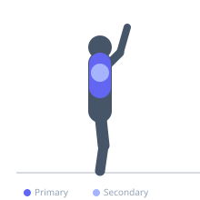
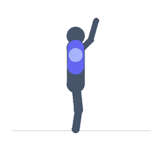

Exercise guide / Scapular Wall Slides with Foam Roller
Scapular Wall Slides with Foam Roller
Wall slides performed with a foam roller held between the forearms and the wall, adding tactile feedback and proprioceptive challenge to the standard wall angel pattern. The foam roller requires the exerciser to maintain even pressure through both forearms simultaneously, detecting asymmetries in scapular movement and motor control. This variation is used in shoulder rehabilitation programs to develop conscious scapular control and bilateral symmetry in overhead movement.
Primary muscles
trapezius lower
trapezius middle
Secondary muscles
infraspinatus
pectoralis minor
Equipment
No Equipment (Bodyweight)


Starting position
- Stand facing a wall with a foam roller held vertically between both forearms and the wall surface. Begin with elbows at shoulder height, goal-post position, pressing the roller lightly against the wall.
Setup
- Use a half-roller or cylindrical foam roller approximately 30-45 cm long. The roller should be held with both forearms pressing equally against it.
Steps
- Step 1: Stand with both forearms pressing the foam roller against the wall, elbows at shoulder height.
- Step 2: Slowly slide both forearms and the roller upward, keeping even pressure on both sides of the roller.
- Step 3: Raise as high as shoulder mobility allows without compensating at the lower back or shrugging.
- Step 4: Slide back down to the starting position with the same even pressure. Repeat.
Coaching cues
- Keep the roller perfectly vertical — it will tilt if one arm is working more than the other
- Light pressure on the roller — this is not a strength exercise; it is a motor control exercise
- Think about reaching long through the elbows, not about how high you get
Breathing
- Exhale as you slide upward. Inhale as you return.
Range of motion
- Slide the roller as high as bilaterally even pressure can be maintained. This is typically less than the range in the unloaded wall angel.
Tempo
- 3s slide up, 2s hold, 3s slide down
Common mistakes
- Applying more pressure through one forearm than the other — the roller will tilt if asymmetry is present
- Losing wall contact with the forearms at the top of the movement
- Shrugging the shoulder blades upward rather than rotating them upward
Safety
- If the foam roller rolling reveals strong asymmetry, address the weaker side with single-arm work before returning to this bilateral drill
- Avoid if shoulder pain increases with overhead movement — stay in pain-free range
Training
- endurance: 8–12 reps
- mobility: 5–10 reps
- endurance: 2–3 sets
- mobility: 2–3 sets
- Rest: {'endurance': 60, 'mobility': 60}